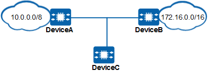

Understanding RIP Routing Loop Prevention
As a distance-vector routing protocol, RIP periodically advertises its routing table and adds valid routes to its routing table. The accumulated metric indicates the distance to the destination network. Therefore, the router running a distance-vector routing protocol does not know the topology of the entire network. These characteristics of RIP may cause routing loops on the network.
Split horizon, poison reverse, and triggered update are important routing protocol loop prevention mechanisms for distance vectors.
Split Horizon
For different network types, split horizon provides two different models: interface-based split horizon and neighbor-based split horizon. On broadcast, P2P, and P2MP networks, split horizon is implemented based on interfaces. On NBMA networks, split horizon is implemented based on neighbors.
- Split horizon on broadcast, P2MP, and P2P networks
Split horizon prevents the routes learned by a RIP routing device through an interface from being sent back to neighbors through this interface. This mechanism reduces bandwidth consumption and avoids routing loops.
As shown in Figure 1, DeviceA sends a route to 10.0.0.0/8 to DeviceB. If split horizon is not configured, DeviceB sends this route back to DeviceA. As a result, DeviceA learns two routes to 10.0.0.0/8, one being a direct route with a hop count of 0 and the other being a route with the next hop of DeviceB and a hop count of 2.
However, only direct routes in the RIP routing table of DeviceA are active. If the route originating from DeviceA to 10.0.0.0/8 becomes unreachable and DeviceB is not notified, DeviceB continues to send DeviceA routing information indicating that the route to 10.0.0.0/8 is reachable. That is, DeviceA receives incorrect routing information and assumes that the route can reach the network segment 10.0.0.0/8 over DeviceB. However, as DeviceB still considers that the route can reach the network segment 10.0.0.0/8 over DeviceA, a routing loop occurs. After split horizon is configured, DeviceB will no longer send the route to 10.0.0.0/8 back to DeviceA, thereby preventing routing loops.
- Split horizon on NBMA networks
RIP implements split horizon based on neighbors on NBMA networks, as an interface is connected to multiple neighbors. Routes on an NBMA network are sent in unicast mode, and the routes received on the same interface can be distinguished by neighbor. As such, the routes learned from a neighbor of an interface will not be sent back through the same interface.

After split horizon is configured on the network shown in Figure 2, DeviceB sends DeviceC the route to 10.0.0.0/8 which is learned from DeviceA, but does not send this route back to DeviceA.
Poison Reverse
Poison reverse means that a RIP routing device sets the hop count of a route learned from a neighbor through an interface to 16 (indicating that the route is unreachable) and then sends the route back to the neighbor through this interface. This mechanism removes the useless route from the neighbor's routing table, thereby preventing routing loops
As shown in Figure 3, DeviceA sends DeviceB a route to 10.0.0.0/8. If poison reverse is not configured, DeviceB sends this route back to DeviceA. As a result, DeviceA learns two routes to 10.0.0.0/8, one being a direct route with a hop count of 0 and the other being a route with the next hop of DeviceB and a hop count of 2.
If the route originating from DeviceA to 10.0.0.0/8 becomes unreachable and DeviceB is not notified, DeviceB continues to send DeviceA routing information indicating that the route to 10.0.0.0/8 is reachable. That is, DeviceA receives incorrect routing information and assumes that the route can reach the network segment 10.0.0.0/8 over DeviceB. However, as DeviceB still considers that the route can reach the network segment 10.0.0.0/8 over DeviceA, a routing loop occurs.
With poison reverse configured, after DeviceB receives a route from DeviceA, DeviceB sends a route unreachable message (with the cost of the route set to 16, indicating that the route is unreachable) to DeviceA. As such, DeviceA will no longer learn this route from DeviceB, preventing routing loops.

If both split horizon and poison reverse are configured, only poison reverse takes effect.
Triggered Updates
Triggered updates mean that when the local routing information changes, the local routing device immediately notifies its neighboring devices of the change through triggered update messages. Triggered updates can speed up network convergence. When a local routing entry changes, the local routing device immediately notifies other devices of the routing entry change instead of waiting for periodical updates.
On the network shown in Figure 4, if the route to 10.4.0.0 becomes unreachable, DeviceC learns the information first. Typically, a RIP routing device sends route updates to its neighbors every 30s. If DeviceC receives an Update message from DeviceB while it is waiting for the Update message, DeviceC learns the incorrect route to 10.4.0.0 from DeviceB. In this case, the next hops of the routes from DeviceB or DeviceC to 10.4.0.0 are DeviceC and DeviceB, respectively, causing a routing loop. If DeviceC sends an Update message to DeviceB immediately after it detects a network fault, DeviceB can rapidly update its routing table, which prevents routing loops.
Another scenario of triggered updates occurs when the next hop of a route is unavailable (for example, due to a link failure). Here, the local routing device sets the cost of the route to 16 and notifies other devices of the unreachability. This is also known as route poisoning.